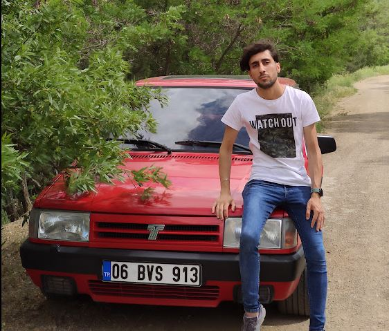

Tarık Aydın

Merhaba, ben Tarık Aydın. 25 Mart 2001 tarihinde İstanbul'da dünyaya geldim. Liseyi Kartal'da bulunan Yakacık Lisesinde, Hemşire Yardımcılığı dalında bitirdim.
Eğitim hayatım boyunca teknolojiye hep ilgim vardı. Ortaokul yıllarımda bir arkadaşımla blogger üzerinden teknoloji haberleri paylaştığımız bir blog açmıştık.
Lise'de ise aile isteği üzerine sağlık alanından devam ettim, okulumun dönemlik dergisini Microsoft Publisher üzerinden tasarladım.
2019 yılında Ankara'ya taşındık ve Ankara Üniversitesi Sağlık Hizmetleri MYO - Tıbbi Görüntüleme Teknikleri bölümünü pandemi sürecinde tamamladım.
Bu eğitimim süresince back-end developer olan abimin desteği ile Youtube, Udemy gibi platformlardan ücretsiz eğitimlerle yazılım öğrenmeye başladım.
HTML,CSS bilgim zaten biraz vardı, C# dili ile konsol uygulamaları yazmaya başlayarak daha sonra Windows Form, ve sonrasında .NET Framework MVC ile web projeleri yapmaya başladım.
Bir sene sıkı bir çalışmanın ardından, Kodluyoruz isimli oluşumun eğitimlerine katıldım. Projelerimle dolu bir GitHub Hesabım oldu.
2021 yılının Kasım ayında, yaptığım bu çalışmalar meyvelerini vermeye başladı ve
Bakiciburada.com'da full-stack web developer olarak işe başladım.
Aslında kendimi back-end (C#, SQL) ağırlıklı eğitmiştim fakat ilk işim full-stack oldu. Ufak şirket olduğu için ayrım olmadan her türlü iş bana geliyor. Home-office çalıştığımı da sayarsak
her gün araştırarak hem verilen işi yapıyorum, hem de yeni şeyler öğreniyorum.
Sitenin mevcut anasayfa tasarımını ben yaptım, 08.08.2022 itibarıyla ise sitemize Google reCaptcha entegrasyonu üzerinde çalışıyorum. SQL tarafında çok uzun sorgular Stored Prodecure'ler
başlarda gözümü korkutuyordu. İlk 2 ay işe oryante olmam oldukça zor oldu, şuan düzenimi kurdum ve çalışmaya, öğrenmeye devam ediyorum.
Bu süreçte mesleğimi resmi belgelere dayandırmak üzere Ankara Üniversitesi Bilgisayar Programcılığı (Uzaktan Eğitim) ve Anadolu Üniversitesi Web Tasarımı ve Kodlama (AÖF)
bölümlerinde eğitimimi sürdürmekteyim. 21 yaşında bir genç olarak verdiğim emeklerin karşılıksız kalmayacağına inancım hep tamdı. Fotoğrafta gördüğünüz ilk göz ağrım, bir nar çiçeği Şahin'im var :)